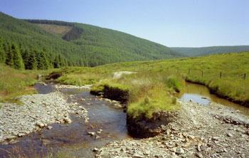

Contents
First Week
- Day 1 - Sunday 9-July - leaving Cambridge
- Day 2 - Monday 10-July - to Forest of Dean
- Day 3 - Tuesday 11-July - around Forest of Dean
- Day 4 - Wednesday 12-July - to Cardiff
- Day 5 - Thursday 13-July - around Cardiff
- Day 6 - Friday 14-July - to Brecon
- Day 7 - Saturday 15-July - Bogsnorkeling championships!
Second Week
- Day 8 - Sunday 16-July - MTBing with MBR folk
- Day 9 - Monday 17-July - CTC Route 4, in Irfon Forest north of Llanwrtyd Wells.
- Day 10 - Tuesday 18-July - CTC Route 5, Mynydd Trawsnant
- Day 11 - Wednesday 19-July - Doethie Valley
- Day 12 - Thursday 20-July - Route planning for GoFar
- Day 13 - Friday 21-July - Last glorious day in Llanwrtyd Wells
- Day 14 - Saturday 22-July - Sustrans Lon Las Cymru off-road route
Third Week
- Day 15 - Sunday 23-July - Sustrans Lon Las Cymru off-road route cont. and the Centre for Alternative Technology
- Day 16 - Monday 24-July - Sustrans Lon Las Cymru off-road route cont.
- Day 17 - Tuesday 25-July - around Dolgellau
- Day 18 - Wednesday 26-July - rain stopped play
- Day 19 - Thursday 27-July - Dolgellau to Betws-Y-Coed
- Day 20 - Friday 28-July - around Betws-Y-Coed
- Day 21 - Saturday 29-July - Simon and Myra have a lazy day
Fourth Week
- Day 22 - Sunday 30-July - walking around Betws-Y-Coed
- Day 25 - Wednesday 2-August - going to the North York Moors
- Day 26 - Thursday 3-August - around the North York Moors
- Day 27 - Friday 4-August - a small ride around the NY Moors, and home
Where I went
| On the left map, my route is marked in red. Day
trips are marked grayish blue. The right map shows the location of
Wales in Great Britain. Left image produced from the Ordnance Survey Get-a-map service. Image reproduced with kind permission of Ordnance Survey and Multi Media Mapping. | ||
Day 1 (Sunday 9-July)
Last night I loaded up my BOB (trailer) bag with all the stuff on the list I'd been creating for the past week. Soon I discovered it wouldn't all fit. What to leave behind? The tent was the obvious choice: along with the Thermarest ad sleeping bag it was a significant contributer to the volume ad weight of stuff I'd tried to fit in the bag. Without that stuff, the bag closed just fine.
This morning I didn't set the alarm clock (so got up late) did a bit of final packing, ate a big breakfast, posed for some photos, kissed Simon goodbye, and headed out. It was 10:30am. Ooops.
| She's leaving home. Bye, bye... |
I wanted to get from Cambridge to the Forest of Dean in two days. The nearest youth hostel to the midpoint was in Charlbury, an estimated 100 mile from Cambridge. Not what I wanted to do for my first day towing the trailer, but it seemed to be necessary. The only problem was: given that I was pulling a heavy trailer I'd be slowed down alot. Would I actually make it to the youth hostel before it closed at 10pm?
I started off riding pretty slowly, and it started to look like I wouldn't make it. But at about the 50 mile point something clicked and I started riding much faster, and I made up for lost time. By mile 85 I was dropping off again, but there was no problem: I had plenty of time. I pulled in about 9:15, having ridden 95 miles. They had plenty of rooms available for tonight, but they were fully booked with school groups both last night and tomorrow night!
I spoke to Simon and he asked me about the rain. Evidently there was quite a storm at his parents, who live just north of here. I was lucky, only getting a light rain a couple of time during the day.
Day 2 (Monday 10-July)
Rain, rain, go away s what I was thinking a good deal of today. It was sprinkling as I left the youth hostel, then gradually built up into a major rain.
I made it into Stow-on-the-Wold (mile 15 for today) still warm, even if not very dry. in Stow I got the Tourist Info Centre to book me a B&B, got some money from Barclay bank, and mailed some stuff home to lighten my load. I decided that James Clvel who always writes such thick books, is not appropriate reading material for a bike holiday. I also sent back my radio and the East Anglia map.
Coming out of Stow I was impressed at how pretty the Cotswalds are, despite the rain. At on point I was cycling up a hill (very slowly as you might expect) and saw a deer munching the roadside foliage. Now this is a common sight in the US, but not where I live: there are no deer near Cambridge. Eventually it saw me and ran away.
deer at Woburn
Which reminds me of my favorite animal sighting of yesterday, which I forgot to mention. Going past the Woburn Safari Park I saw lots of deer. Evidently they have a herd there. The coolest thing was that there was a collection of stags, all with very impressive antlers. I stopped to watch them a bit. I took a couple of piccies, but since the camera has a wide-angle lens (35mm) they will look much smaller than they really were.
Coming into Cheltenham (mile 30) the rain finally stopped. I spent some time and money in a petrol station tore eating a sandwich and warming up.
I have found that it seems much easier to find dark Bounty bars (chocolate bars with coconut in the middle) here. I Cambridge I can usually only find the milk chocolate ones. So guess what I've been eating in addition to cereal bars, malt loaf, and raisins?
I skirted Gloucester, glad that it was finally flat, and headed for the Forest of Dean. And discovered (mile 50) that the FoD is NOT flat. It is very not flat... The last 10 miles were painful, but finally I pulled in to my B&B for a hot shower and mugs of tea. Now just need to find a place to eat!
Day 3 (Tuesday 11-July)
Today was mostly a rest day. It started out very rainy, and I didn't have much enthusiasm for cycling in the forest in the rain. So I decided to play tourist.
I put off leaving the B&B, only heading out when the landlady left to run her craft shop down the road. It was sprinkling as I headed towards the tourist info centre. It took me a long time to find it, and I found a bike shop first. I thought it would be useful to have a different pair of shorts (all mine are the same and have the seams in the same place) so I walked in and asked if they had any good quality womens shorts. "We have just this pair" they said, and they were indeed good quality and they fit. And they were only 20 quid! Bargain.
Finally finding the tourist office I got directions to some touristy things and bought a map of the forest.
First destination was Clearwell Caves, site of very long running (2000 years ago until 1940s) iron mining operation. It was very good, mainly because we had a fab guide - he's a genuine FoD freeminer who spent most of his life mining coal. He was able to tell us what all the machinery did, and tell stories of the miners and their lives. Tops.
Next was Puzzle Wood, a very old forest with large mature trees (lots of oaks) and moss and ferns on the floor. It was dark, damp, deep green and brown, and very beautiful. They liven up your visit by putting things for you to find - two bridges, two lookouts, two dead ends. The crisscrossing trails makes it impossible for you to keep your bearings, so despite the fact that the area is very small it's quite a challenge to find the stuff. I only found one bridge and dead end!
When I left it was sunny. I went back to the B&B. I had left out back my spare tires and pump, so I swapped the slicks for knobbies and headed for the forest. I then realized how ideal my B&B was - in Coalway, exactly on the west edge of the forest, near the best cycle trails. I went to the cycle centre, asked for advice on where to ride, and headed off. There is an MTB skills area where I set up the camera on a tripod and used the self timer to take piccies of myself... I found a great downhill - just on the edge of my capabilities. Then after some riding around I found some excellent singletrack signed with green arrows. I don't know if MTBs were supposed to ride there, but plenty had and the track was ideal for it - ridable in most places, but with some really tricky bits to hone your skills (and occasionally make you push a bit!)
Then back to the B&B for a shower, and to the pub for a chicken curry where I'm writing up this email. Tiny computers are fun!
Total distance for today: 16 miles. I said today was mostly a rest day!
Day 4 (Wednesday 12-July)
I'm finally in Wales!
The day didn't start off too well, as I tried to write the B&B lady a cheque and discovered that I was writing her a dollars cheque instead of a sterling cheque! I'd brought the wrong cheque book. Silly me. Anyway, had barely enough money to pay her in cash, and I hit the money machine out of town.
The trip here (Forest of Dean to Cardiff) was pretty uneventful: very little rain, no headwinds, even the roads were good. Cycling from Chepstow to Newport I thought: hooray for the M48! Of course cyclists can't use motorways, but all the cars choose to use that, leaving the old A48 for me. It was a broad, smooth road that avoided major hills, and had very little traffic. Ideal for cycling.
I got a bit lost in Newport, as my maps weren't very detailed, but a friendly local set me on the right route. As I cycled along the River Usk I saw a tall girdered structure stretching across the river. Some sort of heavy duty crane, I thought. Then, to my surprise, I saw a little cage with cars on it, suspended beneath it, going across the river! I had found the Newport transporter bridge. It was built in 1900 as an alternative to more normal sorts of bridges which didn't work because of the very tall ships that came through and the extreme range of tide heights. It's now a listed building (which basically means it must be preserved), and continues to operate with extremely low tolls (50p for cars, pedestrians and bikes for free) as a tourist attraction. Sadly, I had already crossed the Usk, so there was no excuse to use it. Still I watched it for a bit, never having seen anything like it.
Animal sighting of the day: a hedgehog rooting in the weeds on the edge of the A48. I told it that it was a nocturnal critter, and that it should go back to bed.
I'm staying this night and tomorrow night with David Owens an his family. I met David through a cycling newsgroup, when he bought my Thudbuster suspension seatpost. They took me out to dinner tonight. Tomorrow I'll go riding with a couple of David's friends, and tomorrow evening we'll check out Cardiff Bay and go see Chicken Run, the new Nick Park movie.
Total distance today: a bit over 50 miles.
Day 5 (Thursday 13-July)
Today I went for a ride with a couple of friends of David Owens (my host in Cardiff). The plan was to catch a train up to the hills and ride back. Roger, who lives across the road, picked me up at 9:30 to take me to the train station. Unfortunately I was filing my Camelbak bladder at the time and didn't her the doorbell. When he'd finally knocked loud enough for me to hear it was 9:35 and he was worried about making it to the station on time.
We headed out and soon I noticed that my lower back was wet. Ooops either the top of the bladder wasn't closed well enough, or the hose wasn't connected correctly at the bottom. Either way we were short of time and I'd have to wait until we got to the train station to sort it out. The top of my shorts got wet. Then the bottom. Then I felt these little drips down my leg. I pedalled on behind Roger. Finally we got to the station and met Danny, and I quickly took off my pack and figured out the problem: the zip lock at the top of the bag hadn't locked properly, so water was sloshing out. I closed it up, and the was left with a wet bum and back. Wonderful.
On the train I sat in several locations, letting the cloth seats soak up some of the water. I was still quite damp when we left the train at Treherbert, but I dried out eventually as we rode. First we went up a small A-road, then we took Sustrans route 47 for a while. Despite the fact that Roger had been on the route before, we still went off it twice because it wasn't very well signposted. Other than that it was an enjoyable route, mainly a wide dirt road with lots of loose rocks. I got a pinch flat along here: I still had my slick tires instead of the knobblies. I hadn't swapped them over because the other guys had slicks as well.
We stopped for lunch (sandwiches) in a tiny village consisting of one pub and one church - no houses! From there we took a tiny road into Pontypridd where I discovered that my rear tire was flat again! We stopped to sort it out. Turns out I had some sidewall damage. I got out my Park super patches but the paper backing for the plastic patches had gotten damp and was sticking to the patch! Luckily one of the guys had some conventional patches so we fixed both tire and tube, and I was again on my way.
From there we followed the Taff Trail (constructed on old railway lines) to Cardiff, total distance for the day about 40 miles.
This evening David's, his two kids and I headed to the docks area to see the movie Chicken Run, which we all enjoyed.
Tomorrow I head off towards Brecon. I have really enjoyed my stay in Cardiff and the warmth shown me by the Owens family. They made me feel at home.
Day 6 (Friday 14-July)
Today I rode from Cardiff to Brecon. From Cardiff to Merthyr Tydfil (which everyone calls Merthyr) I rode along the A4054, another A-road made very nice for cycling by a much larger road going the same way (in this case, the A470) and attracting the cars away. If I weren't towing the trailer I could have taken the Taff Trail that we used yesterday, but there are quite a few motorcycle barriers that are annoying to get around with just a bike and would be bloody difficult with a trailer.
However in Merthyr I wanted to pick up the Taff Trail mainly to go over some very cool viaducts - old train bridges spanning valleys and rivers. David and Roger didn't quite remember how to get to the viaducts and suggested that I ask at the local bike shop, which they remembered the way to very well (strange that). I found the bike shop and the fellow there was very helpful, telling me how to get there and giving me a map of the Taff Trail. I mentioned that my brake were feeling a bit spongy, and quickly he had his allen keys out and was adjusting them. When I worried that the tire on my BOB was a bit soft, out came the pump. Of course, I had to buy something after that. I got three energy bars, a small tube of grease (always handy) and a set of my favorite Zefal tire levers.
I found the track leading to the viaducts easily, and went over the first one. The one problem was the cursed motorcycle barriers. I had to yank and lift and slide the bike and trailer to get them around. At the third barrier by a churchyard a couple of friendly locals helped me through. I'm glad that I have no problem understanding Welsh accents; it would be embarrassing if I couldn't understand the local people, especially as they re so friendly to me.
| canal right next to B&B |
Then it was smooth sailing on a well-surfaced gravelly track. The track joined the road, and I followed the road as far as the Talybont reservoir, ignoring the Taff Trail as it did loops away from the road. At the foot of the Talybont reservoir I rejoined the TT, and coasted for miles. OK I didn't really cost, I pedalled some to keep up my speed, but I could have coasted slowly if I'd wanted to. I turned left at Talybont-on-Usk (yup, the same river I crossed two days ago in Newport, about 30 miles upstream) , leaving the TT for good. Then it was only a few miles to my B&B for the night giving a total of 43 miles for the day.
I had a shower, and the B&B owners let me cook some Ramen noodles in their kitchen, so I didn't have to eat alone in a pub tonight.
Tomorrow I go to the Neuadd Arms hotel, hopefully arriving by 2pm, when they are running the MTB bog snorkeling world championships.
Day 7 (Saturday 15-July)
My route today was through Brecon, over some mountains, and on into Llanwtryd Wells, home of the Neuadd Arms hotel and the MTB bog Snorkelling World Championships.
My B&B last night was right next to a canal, so I figured I'd cycle along the canal into Brecon. This morning I roused myself up early, had breakfast, and was on my way by 9:05. I set off along the canal in what I thought was the right direction, but after a few minutes I paused. Was this the right direction? I was cycling into the sun, so heading east. Picturing the map, Brecon was to the left of my B&B, and left is east so I was all right. I kept going.
The smooth gravelled surface of the canal towpath gave way to narrow occasionally muddy singletrack, which required a fair bit of concentration given my slick tires and the trailer. Also I kept on encountering walkers, which meant had to slow way down, smile, and ask to get by (I do my best to be positive PR for MTBing).
Then the towpath was closed for repair and a detour map showed how to get around the close section. Except that the map was very confusing, as they'd drawn it with south at the top. Anyway I followed the detour onto a road and was tooling along when I fund myself in front of a Welcome to Talybont-on-Usk sign. Talybont?? I went through that yesterday. Then it all came to me: left on the map is west, not east, and the detour map was drawn the right way, with north on top. I'd gone the wrong way. I turned around, passing all the walkers who were now along the road.
This time I stuck to the road getting to Brecon, except or a bit at the end, when you had the choice of a big highway or the canal. I found a sign pointing to Brecon along the canal, and checked that this sign pointed west, away from the sun, before I took it.
| the view from the top, looking north |
I found my way through Brecon all right and headed out and up. And up. And the down then alot more up. At the top was a big Ministry of Defense firing range, along with lots of sheep. From the top it was a fast ride down and from there along the valley to Llanwrtyd Wells. Arriving in town I saw a sign announcing the bog snorkeling and some neon yellow arrows with BOG written on them. I followed the arrows and found the bog.
[In my diary for July 15th I described the bog snorkelling event, but now it has its own Web page.]
After the festivities I went to the hotel, checked in, and had a shower. I ran into some guys from MBR (a MTB magazine) who are here scouting routes, and they were happy to have me ride with them tomorrow. So it looks like I'll have some company for my first day's riding here. I swapped my tires for knobblies in anticipation.
Today's distance: 34 miles.
Day 8 (Sunday 16-July)
Today I went MTBing with Tom Hutton, MBR routes editor, and his riding buddy Tim Salveson whom I met in the hotel bar last night. Our route, which Gordon Green (owner of the Neuadd Arms hotel that I'm staying in) suggested, took in the Crychan Forest south of Llanwrtyd Wells. The day was sunny and reasonably warm, and the guys were good company. They were faster than I was up the hills, but they slowed down to let me catch up.
 |
| picture by Tom Hutton |
The route was largely smoothish forest roads, but there was one great track, an old Roman Road with just the native rock for a surface. It had some nice dropoffs and looks like it would present a real challenge for a climb. They were exploring the route for inclusion in the magazine, so if you see an MBR (Mountain Bike Rider) route starting in Llanwrtyd Wells in the near future, that's the one I was on.
My legs ached a bit, so I decided to call it a day after getting back to the hotel. After all, I have a week here, no need to do it all at once.
I've stocked up on maps (OS explorer bought from the small grocery store across the street) and bought a cycle routes guide. Tomorrow I will start checking out the routes in the guide.
Total distance for today: 22 miles, mostly off-road.
Day 9 (Monday 17-July)
Another warm sunny day. Today I rode one of the routes that been way marked by the CTC. I did route 4, in Irfon Forest north of Llanwrtyd Wells. The first part was pretty boring, mostly fire roads. The scenery was very nice, especially on such a fine day but there wasn't much going on under my wheels.
The first real decent was a doozy though. Steep, narrow, a few dropoffs, trees all around. Lovely. I tried taking some piccies of myself (using the self timer) going through a little streamlet, but in my haste to get into the picture I crashed in the little stream, getting very wet and mucky, and bashing my right elbow. I picked up my bike, scraped the worst off myself with handfuls of grass, wiped my elbow with an antiseptic wipe (I was glad I'd remembered to put the little first aid kit in my bag) and vowed not to take any more piccies of technical bits.
The second half of the ride was much better than the first - hard steep climbs (instead of wimpy middle-ring fire road climbs) narrow rutted tracks, descents with little dropoffs, stream fordings. I rode much more carefully and didn't have any falls, although the riding was much more technical.
When got back to the hotel I'd only done about 16 miles and it was too early to call it a day. So I went exploring - I checked out a bridleway that lead out of town towards the forest. The first part was awful (too broken up by horses to be ridable) but the rest was good, though reasonably hard riding.
Coming back from exploring I felt pretty tired, and I had done 20 hilly off-road miles, so I called it a day and went for a shower.
I found a couple in the bar who turned out to be cycle touring, so I chatted with them for a bit. They are staying in the hotel across the road, so I will go over there tomorrow before they head out to have a look at their bike - evidently it's a full suspension MTB tandem! I've never seen one before... I'd liked to have seen it this evening, but evidently in that hotel they aren't so free with the bike shed key. Here it lives on the hotel desk.
Tomorrow I think I will explore more of the CTC routes, since the first one was so good.
Day 10 (Tuesday 18-July)
This morning started out with me admiring a tandem. It was owned by the couple I'd met in the bar last night. It was a bright red KHS bike with 4-bar suspension at the rear and triple clamp Pace forks at the front, shod with MTB semi slicks. And with a little blue plastic squeaky toy on the handlebars, partially negating its trail-killer looks.
| pic from Pete |
I had breakfast with a fellow named Pete whom I'd met yesterday when he rolled in on his Marin after doing the same route that I had, No 4 in Irfon Forest. He remarked that he thought he'd been following some fresh tracks...
As it turned out, we were planning on doing the same route (No 5, Mynydd Trawsnant), and as we started at the same time, we rode it together. He had to wait for me after all the difficult bits, but he seemed to enjoy the company, as did I. About halfway through the ride the sole of his right shoe came off, leaving the cleat permanently attached to his pedal, and after that he didn't get too far in front of me.
We got lost at one point, where the directions on the route card weren't as detailed as they could be, the little sketch map was very sketchy, and markers on the ground were nonexistent. It was only with the use of my map and compass that we figured out where we were and how to get back on the route. Soon (it was mostly downhill) we were back in Llanwrtyd Wells.
Pete packed and headed out, while I debated what to do. It was too early to call it a day, but I really didn't feel like riding any more, despite only having gone about 17 miles. I decided to play tourist and check out the local woolen mill, which was just out of town. I took a shower, put on civilian clothes, and headed out. It wasn't quite the tourist attraction I had hoped for, it was just full of weaving machines making tartans.I suppose the machines were somewhat interesting, but I would have liked to have seen how the sheep's wool got onto the spools of threads. Oh, well.
So I came back with only a bit over 19 miles done for today. The route only had one really challenging part, most of the rest was either road or boring forest fire road.
Hanging on the wall of the pub was a long route (30 miles) that looked like a good challenge, so I marked it with pink highlighter on my map. As I ordered a pre-dinner beer a fellow at the bar recommended the Doethie Valley to me. Where's that, I asked, and he went to show me on the map. He was quite surprised to find that the route he was going to recommend had pink highlighter on it! Well, it must be fate, so that's what I'll do tomorrow.
Day 11 (Wednesday 19-July)
The weather continues to be fabulous - warm and sunny, clear blue skies with the odd fluffy white cloud. It's been like this ever since I arrived here on Saturday. This sort of weather is very rare in Wales (and in the rest of Britain for that matter) so I'm sure I'm getting the best summer has to offer, right here and now.
I had a great ride today. I followed the route I'd marked out yesterday (the one on the wall) which was also recommended me by the guy at the bar (whom I've learned is a walking guide). Basically it went north out of Llanwrtyd Wells on road for awhile then went west on easy forest tracks, then went south on a bridleway for aways, then back east to town on forest road and tarmaced roads. The total distance for the ride was 30 miles.
I felt like having bit of a challenge, so I replaced some of the first road bit with some off-road which involved a steep challenging climb then a technical downhill which I'd done on Monday as part of the Irfon Forest ride. Heading west on the forest tracks was easy enough, as I had copied own the route instructions as well as highlighting my map.
I cut off the top left of the official route, following the suggestion of the walking guide, and so rode on an old drovers road over some hills. Coming to the last bit of the drovers road, close to where I would rejoin the published route, I rounded a corner and suddenly the whole Doethie Valley was spread out in front of me in the afternoon sun. It was amazingly beautiful. There were no buildings in sight, only grass and ferns in all different shades of green, and of course lots of sheep. I paused for quite a while admiring the view before descending.
The southbound bridleway I joined went along the left side of Afon Doethie, a fair ways above the stream. It was narrow and had a few tricky bits (rocks and bog) here and there. I was extra cautious, as I realized that I was the only person in this entire valley, and if I got hurt no one would be around to help. Despite this I still managed to fall off the track to the right, down the steep side. Luckily the part I landed on was boggy grass, but I slid for a short distance on my right elbow, which hasn't completely healed from Monday's crash in the little stream. It hurt quite a bit, but I knew there was nothing seriously wrong, so I carried on. After all, what else was I to do?
After I got to the end of the southbound bit I headed east along the road, then went through forest back to town. This last bit was the same route that Pete and I had taken yesterday and gotten lost on. This time, however, I knew my way. I started the long, long climb, and I ran out of water just before I reached the top. No worries, I thought, because once I get to the top, it's downhill on fire road all the way back to Llanwrtyd Wells. Well, that's a bit of an exaggeration: there was a tiny section of uphill bridleway after the downhill fire road, and there was a bit over a mile of mostly flat road back to town, but it all went by pretty quickly.
I pulled into town having done 31 hilly, mostly off-road miles. I was very tired, and shoved the bike in the garage without washing it. I took a shower, had an early dinner, and then I had the energy to wash the bike.
Day 12 (Thursday 20-July)
Today wasn't quite as sunny as it has been; a few clouds have rolled in tone down the sun. Still plenty bright and warm, just less direct sun, making the climbs a bit easier. And now that I look out my window there isn't a cloud in the sky so maybe it'll be back to blindingly bright tomorrow.
Tomorrow will be my last full day here. I asked the owners for advice of where I should go next and they suggested a bike trail heading north. Sounds good to me. So tomorrow I'll stop by the tourist info office (which is across the street, this *is* the smallest town in Britain after all) for details tomorrow.
Today's riding was a mixed bag. I'm trying to sort out a route for GoFar (online MTB mag, http://www.gofar-mtb.com/), and I had a nice one all figured out on the map. I only needed to make sure it would be all right in real life. The first part went fine, and I knew the last bit would be OK since it's part of one of the CTC marked routes. But the bridleway that connected them together just didn't exist on the ground. I struggled for awhile trying to find the bridleway, and then to construct an alternative using forest roads, but it just didn't work.
In frustration I went back on the road to the hotel and looked for Gordon (Green, owner of the hotel) to get him to suggest a route. Which, in all honesty, is what I should have done in the first place. He pointed out a few nice places to ride so I'll check these out tomorrow. But for today, so I wouldn't feel that the day was wasted, I went off again and rode a few of the bridleways nearest the hotel. One involved a ford across a not-so-small stream, so I took off my socks and shoes and carried the bike across. I sat on the far bank, letting my feet dry eating a cereal bar, and taking in the sunshine before I headed back.
Did 26 miles in total today.
Hmmm, I just had a nice chat with a lady in the bar who's an avid horsewoman, and she has recommended to me a variation on my original route which sounds nice. So I guess I'll do that instead of using Gordon's suggestions.
Day 13 (Friday 21-July)
Today is my last full day in Llanwrtyd Wells. I've bought myself a map of the Lon Las Cymru (the Welsh National Cycle Route) and will head out on it tomorrow, heading roughly north.
Today was a scorcher. Sunny and very warm - the warmest day of an entire week of great weather. On this day I was not doing something sensible like sitting on the hotel verandah sipping cold drinks, I was out plotting a route for GoFar.
I knew which route I should take, as the horsewoman at the bar last night had suggested it. But sometimes finding the tracks on the ground isn't so easy, even when you know the tracks exist.
I started out my ride by noticing that my brakes had gone mushy again. I was about to tighten the cables one more time when I noticed that the brake pads had worn enough that they were no longer aligned with the rim. So I sorted that out, under the already hot morning sun, before I even left the hotel car park.
The ride starts with a quick whiz down the main town road to pick up a farm track bridleway. This track leads to a B&B, so there are frequent encouraging signs like "Yes, your car can make it up this hill" and then in a bit "Told you!" I was slightly annoyed, because I could have used some encouragement, but the signs were not for me.
As I trudged up, the sheep kept running away from me. Well, they'd run a ways up the track, then stop and look at me to see if I was still pursuing them. I steadily approached, and they'd run some more. You'd think that with the number of walkers, bikers, horses, and cars that go down the track the sheep would learn that the big nasty beasts tend to stay on the track and that if they went into the fields they'd be safe. I just don't think sheep are very smart.
The track left the farms and went into the woods, and then joined an old Roman Road. I'd ridden this on my very first day here, with the MBR route guys, so it was fitting that I rode here on my last day. I like this track. In many places this is just bare rock, presenting a rough surface for riding. It's especially challenging as a climb, and I started the climb now. It seems that a week of riding over here has improved my fitness; I made it to the top without putting my foot down for the first time.
The Roman Road eventually levels out, then begins to drop. This bit isn't quite as challenging as the part I climbed but I still took it easy, not wanting to risk injury while riding alone.
After this I had a few miles of road to cover. On the map there are bridleways here, but I wasted at least an hour yesterday looking for them, and both Gordon and the horsewoman verified that indeed, they don't exist. At least the roads were small and lightly traveled, and I got to go under a large viaduct.
Finally it came time to pick up another bridleway. The map showed me joining the bridleway before I crossed a bridge over a small stream. I found a track, but it soon petered out, and it didn't look very much like the one I was supposed to take anyway (for one thing I was in broadleaf trees instead of pines). Also according to my compass, it was going east and I wanted to go north. But this was the only track just before the bridge. I just didn't get it.
Eventually I gave up and decided that I would take an alternative, a farm track on open land instead of a bridleway in the forest. So I went further down the road and suddenly crossed another bridge! I was startled, as the map only shows one bridge, but a closer look at the map showed the tiny sliver of blue that the first bridge crossed. Ah, that's it! I found my bridleway between the two bridges and climbed into the forest.
The track was steep, wet, and loose, and my wheels kept slipping. I walked until it levelled out some, then got back on the bike. I liked this. It's good to have some not-quite-ridable bits on a route, as it gives you something to aim for, a chance to improve.
At the top I joined a big forest track, then looked out for a bridleway off to the left. I spotted a tiny track in about the right place. It had horse tracks on it. Could this be it? A careful examination of the map suggested it was, so I headed down, enjoying the narrow rough track.
At the bottom the bridleway went along a stream. But, not content to stay on one side of it, it went across the stream, without benefit of a bridge. Twice. Luckily the rocks weren't too slippery so I made it. This track was nice, narrow and winding along flat fields. Riding along in the warm afternoon sun I felt great. The peace was only broken by the roar of a jet plane. I looked up to try to find it, but saw nothing. Looking ahead of the sounds, though, I found it: a dark-painted, pointy plane, clearly military. They had been a constant feature of my stay in Llanwrtyd Wells, as there's an air base nearby. Once while I was out riding I saw a big fat propeller plane slowly lift itself over the hill in front of me. It was a Hercules, was the consensus at the bar later.
Of course after the flat fields came the inevitable climb. And climb I did, for two miles after I had re-entered the trees. Finally came the payback: a fast forest road descent where I quickly lost all my hard-earned altitude. A short technical bridleway descent and climb, and I was back on the road, 1 1/4 miles from Llanwrtyd Wells.
But it wasn't over yet! I'd noticed a route that would take me off-road for part of the the way back. I followed it and it involved - guess what? - another climb, very steep and technical in places. Good stuff. And then the final descent on a rooty bridleway, and then it was a quick trip back into town.
Coming in I passed a shop that had bananas in the window, and I suddenly craved one. There was nothing to stop me, so I bought two, and a Ribena, and sat on the hotel verandah under the shade of an umbrella, drinking and eating, and reflecting on the day's riding.
Total distance for me today: 22 miles. The route I worked out is 18 miles long.
Day 14 (Saturday 22-July)
Yesterday evening I was busy writing up the directions for the GoFar route so I didn't have time to pack. So I spent quite a bit of time this morning putting my gear together, as well as posting back to Simon stuff I didn't need, including maps for south Wales (I'm now in mid-Wales and heading north), one of my bike locks, and my GT polo shirt I got for bog snorkeling.
It was 11:30 when I finally got the BOB hooked up to the bike and got going, following the Sustrans (an organization that builds bike paths) Lon Las Cymru route, the off-road version. It started out following a road I'd ridden many times over the last week. I saw the ends of all the bridleways I'd ridden, and I thought of the great rides I'd done.
The road followed the Irfon River (really a little stream at that point) north out of Abergwesyn, and this was really spectacular. Actually it reminded me alot of the Doethie Valley which I'd taken in on the route on the wall of the bar at the Neuadd. Except that instead of being completely devoid of people (besides myself) it had a few cars going along it very slowly, enjoying the view, and stopping frequently (pulling off the extremely narrow road) to get a better look.
After this was the Devil's Staircase, a hill with a 25% grade in places. I didn't even try to ride, and it was a very hard push.
Shortly after this I left the road and joined a byway, a rutted rough dirt road. This was a bit of a challenge with the trailer. At one point I was suppose to leave the byway and join a forest track, but I didn't find the turn off. I did see a track turning off at more or less the right place, but it ended in a fence. I found myself fording the stream that the byway ran next to, once, twice, again, and pushing my bike and the trailer around big boggy sections. This isn't a Sustrans route, I thought. I pulled out my detailed OS map and found that indeed I was still on the byway, but it was a much shorter route than the official route. Great! I kept going.
|  |
| !@^*$;& fords |
And I kept fording the stream. At first I was being careful and pushing the bike through the edge of the fords where they were shallower (yes I got wet feet, but it was warm and sunny yet again so this wasn't a problem). Eventually I gave up and just put the bike in a low gear and rode right through. I was glad I'd left the knobbly tires on the bike. Still, when puddles of unknown depth covered the byway, I preferred to push the bike around rather than ride through. Since the grass beside the byway was generally quite damp this often involved hauling the bike and trailer through sticky mud. This was real work, and I was going very slowly.
My OS map told me that the path I was on crossed the official path, so when I came to an intersection with a wide, smooth forest track, I verified (comparing real life to the map) that this was the right way, and I took it. Finally the miles began to accumulate again even if slowly.
When I finally hit tarmac again at mile 19 for the day, it was 4pm. I started to feel quite down having done so little distance. I vowed to ride until 6pm, and then look for a B&B.
I went through the tiny town with the big name of Pontrhydfendigaid, then Ysbyty Ystwyth, and then I was supposed to pick up another off-road bit. I debated giving it a miss. But, hey, it was still warm and sunny, and it was only about 5pm, so I took the off-road detour. I climbed and climbed and found myself on a singletrack road, with little hillocks of bare grass and gorse bushes (and sheep, of course) between me and the valley far below. Beautiful. And I thought, where would I rather be? Nowhere, I concluded, and I began to cheer up.
Suddenly I came to a gate in front of a farmyard. I didn't have a nice detailed OS map of this area so I wasn't sure if I was supposed to go through here. I saw a faded sign on the gate: no unauthorized motor vehicles. Oddly enough, this made me feel welcome - the owner obviously has no problem with non-motorized vehicles. I went through the gate and saw on the other side of the farmyard another gate and a sign: please keep to the track. OK, this is probably the right place. I went through and found an old man walking toward me. I asked if I was going in the right direction, towards Cwmystwyth. Or rather, I pointed to the name of the town on the map and asked if I was going towards that (to my embarrassment, I still can't reliably pronounce Welsh place names). The fellow said, "Hold on I'll get my glasses" and went back to the farm. When he came back, he confirmed I was in the right place and then kept talking.
When I first saw him I wondered if perhaps he resented Sustrans putting a national cycle route through his farmyard, but soon I realized he probably quite liked it, as it gave him people to talk to. He told me about the mansion across the valley that he used to work in when he was young, about going off to the war in '44, about how the patch of trees to the right used to be a big sheep field, and how they'd have loads of sheep-shearers coming in, using hand-shears (now they're powered by compressed air), how this year foxes got a couple of his lambs... I hated to leave him, since he was obviously happy to have someone to tell stories to, but I wanted to head on to Devil's Bridge, which he said was the next town on the route with a hotel or B&Bs.
Finally I got under way an made it to Devil's Bridge. The hotel was full, but the B&B just up the road was empty, and only 17.50 a night. My room is tiny, but I have exclusive (since I'm the only guest) use of a sizeable sitting room, where I'm typing this now. There's a stereo in the corner, which needed an extension cord before it could be plugged in and turned on. I'm listening to a Welsh radio station. I don't understand a word of Welsh but at least they're playing good music (half Welsh stuff I've never heard before half good old English-language rock-n-roll).
Oh, at a little park before the final descent into Devil's Bridge I came across another biker who'd come the same way I did. He also missed the turn from the byway, and realized at all the fords that he wasn't on the right track. So he went back to the little turn-off I'd seen, and had discovered that the fence across it was a cleverly disguised gate! Oh well, at least I tested the waterproofness of my BOB sack. It has passed with flying colors: everything is bone dry. I just hope that the hub in the BOB is well sealed, since it definitely went under water!
Total for today: 33 very hilly and occasionally very difficult miles.
Day 15 (Sunday 23-July)
This morning I played tourist by checking out the bridges at Devil's Bridge. The first one was built in the 11th century by monks, so the Welsh name for the place is Monk's Bridge (the English name comes from the legend that the bridge was built by the devil). Right above that is a 19th century (or was it 18th?) one built to carry horse & carriage traffic. Then on top of that is the bridge that's used today which was built in the early 20th century. There are also some waterfalls there but I contented myself with the bridges.
The weather started out cool, sunny, and windy (in my face for most of the trip). Gradually it clouded over, but at least it stayed dry. The whole day I wore a long-sleeve top over my usual coolmax T-shirt.
Bike-wise, I continued to follow the Sustrans Lon Las Cymru off-road route. This followed a small A-road out of Devil's Bridge, then at Ponterwyd it took a tiny road heading off into the mountains. This eventually turned into a rough, rocky dirt road, which was a fair bit of a challenge with the BOB. I came to a ford and felt: after yesterday, I can handle fords. So I started to ride across, but unlike yesterday's rocks, the ones at the bottom of this stream were slippery. The bike slid sideways. I landed on my feet and picked up the bike as quickly as I could: the BOB bag is waterproof, but the handlebar bag is not. I pushed the bike through the ford. Oh well, wet feet again.
| polytunnel bike shed at Corris YH |
Then the route turned onto a smooth forest track for a long climb. However, when the track turned downhill it got much rougher. At one point I was going down this steep track covered with loose rocks. I cycled down this, but not all in one go. The bike would slide out from under me, I'd land on my feet, let my heart settle down, and I'd get on again.
Halfway down I saw the guy I'd met last night coming into Devil's Bridge. We introduced ourselves: his name is Steve. We rode together into Machynlleth, and he said he was going to the Centre for Alternative Technology. I didn't have any plans, so I figured I'd go along as well.
The CAT is meant to inspire people to live more sustainable by cycling and taking public transport, recycling, putting more insulation in their houses, generating electricity with wind and water, etc. We wandered around there until it closed at 6pm, then headed to the Corris youth hostel where he had a bed booked. Luckily they had plenty of spaces, so that's where I'm staying tonight. It seems to be a bit of a New Age youth hostel with candles on the tables, crystals on shelves, mystical paintings, etc. Since I've now joined the main Sustrans route (as opposed to the off-road one) and we've met another biker doing the route in the opposite direction, so we all went to the pub down the hill for dinner.
Surprisingly, the phone (Vodafone) reception is good here. In Llanwrtyd Wells it was intermittent; in Devil's Bridge it was non-existent (which is why I didn't send out yesterday's report until today); here it's great.
Total distance for today: 27 miles, what with the hills, off-road bits, and tourism (CAT).
Day 16 (Monday 24-July)
The day started cool and cloudy. My main accomplishment of the morning was adjusting my V-brakes due to pad wear. When I finally got under way Steve was going too, and we headed our separate ways: him to the east to pick up the Lon Las Cymru off-road route, and me north to continue the standard Lon Las Cymru.
| coming out of Corris, note the fence made of shards of slate |
It seems that even the standard route can include some very rough off-road. I started out from Corris this morning on a nice lightly travelled road, which soon became a very steep smaller road, which soon became an equally steep rough track with the occasional loose rocks. It would have been a good challenging ride without the trailer, but it was impossible with it. I hoped the way down was similar so I could have a bit of fun, but it turned out to be a not very steep smooth grassy track that I could have probably ridden up. Oh, well.
I came into Dolgellau about lunchtime. By now the clouds had cleared, and the very gray town (all the buildings are made of the same gray stone) looked quite nice. I went past a bike shop and bought some more brake pads as backups, and asked about routes. Soon, at my request, the bike shop guy was highlighting my map with route ideas. I looked at the result and thought: that's several days' riding there. So I decided to stay.
I found a B&B down the road and signed in. It was early and the room wasn't ready, so I went for a walk: the Precipice Walk just out of town which goes around a hill, fairly high up it. Simon and I had done this before on our first holiday together 4 years ago, but it was nice enough to do again.
After the walk I returned to the B&B, had a shower, and got some Chinese takeaway from the shop down the road.
Total distance for today: 17 miles with the bike, 2 or 3 on the little walk.Day 17 (Tuesday 25-July)
When I woke up this morning it was raining lightly. I slipped out the fire escape to check my bike. (My window opens onto the fire escape leading to the back garden, and the bike is parked under the fire escape.) It was getting a bit damp, so I moved it more into shelter.
By breakfast the rain had stopped, so after breakfast I chose a route and headed out. The start was really easy: west from Dolgellau on the bike path along the Mawddach Estuary, then across the railway, bike & pedestrian bridge to Barmouth.
I felt very lethargic, so I took it easy, pedalling gently along. At Barmouth I stopped to watch people fishing for crabs from the docks and building sandcastles on the beach. I didn't feel much like cycling. In fact the idea of sitting in the back garden of the B&B with a book and pot of tea appealed to me. But I'm a cyclist, so I ride my bike. I'd probably feel guilty if I had an entire day of rest.
The sun came out while I was in Barmouth, and that helped perk me up. I headed north along the main coast road in the direction of Harlech, but turned east, inland, at another Talybont (I passed through Talybont-on-Usk on the way to Brecon on July 14th). This road climbed, then turned into a good dirt road and kept climbing.
My highlighted (courtesy of the bike shop guy yesterday) route showed that I needed to fork right at one point. I noted that another track joined in from the left before my turn. As I rode along I noticed a right fork, but as I hadn't seen the track on the left I ignored it. Eventually it became obvious I had come too far. I looked at the map for more clues. There was a patch of trees near where I needed to make the turn. I went back and groaned when I discovered that the track I'd noted but ignored was the one I needed. Oh, well.
This track lead down to a neat little stone bridge, then steeply up after this. I tried to ride this but ended up walking large sections. I noted how much nicer it was to push just a bike up a steep hill rather than a bike plus a loaded BOB. With just the bike, it's a gentle walk as you guide your two-wheeled friend along beside you. With the trailer it's a tremendous effort, involving lots of pushing, shoving, and cursing.
Once I got to the top it was mostly downhill for two miles. This was great fun. Then I joined a road and it was another 1.5 miles of mostly downhill. They certainly have big hills in Wales! Then it was a short flat ride back to Dolgellau.
Total distance for today: 30 miles.
I still feel a bit sleepy. My left shoulder is a bit tight, and I've found that the B&B lady does massage. Well, not the usual sort of back massage, but Indian head massage, which involves a fair bit of loosening of the shoulders as well. I'll see if I can get her to fit me in a session before I go.
Day 18 (Wednesday 26-July)
The B&B lady did find time to do a head massage for me yesterday. It seems the head massage is intended to be relaxing in the stress-relieving sense, not in the loosening up of very knotted muscles, which requires a deeper, more forceful massage. Oh, well. It certainly left nice and was relaxing, but didn't help my tight shoulder much.
Today my bike stayed under its fire escape shelter. It rained all morning, and when it finally stopped raining after noon I didn't feel like riding. I debated what to do while I had lunch. I finally decided to go for a walk. I noticed that the Torrent Walk, another walk that Simon and I had done four years ago, was very close to town so I included that in a longer walk that took about three hours. So even if I didn't ride my bike, at least I got some exercise.
After coming back I washed all my clothes in the Launderette across the street an had fish & chips for dinner. Time to pack up now.
Day 19 (Thursday 27-July)
Leaving Dolgellau this morning I followed the Sustrans Lon Las Cymru north through the Coed-Y-Brenin forest. This is one of the alternative routes; the main route goes along the west coast of Wales.
This section was actually ridable the entire way, unlike many of the other sections I've been through. Eventually the route left the forest and at Trawsfyndd went along the A470. This was very easy riding, in comparison to the tiny roads that seemed to seek out the hills and especially the off-road bits. It's plenty wide enough for cars to pass easily, yet on the map for the route it says that this section "involves some busy fast roads. Only recommended for experienced cyclists". But there is no way to avoid it, at least on this route (and the only way to avoid a similar road on the main route is to ride on the beach, which sounds extremely difficult). And many of the off-road sections are noted as for experienced cyclists only - which I would agree with, as some are quite difficult.
All of this makes me wonder just who these Sustrans routes are intended for. They are perfect for me, a very experienced, reasonably fit cyclist with a good bike and decent navigational skills. I can handle both the rough off-road and busier on-road sections, but your novice cyclists won't feel confident on either. And yet on the map it says that the stated goal of the National Cycle Network (which this is a part of) when it's completed, is that it will be "safe for novice cyclists, useful for helping to reduce congestion, and memorable for visitors".
Unless they eliminate from the main route *all* the places that they've marked for experienced cyclists only in both the on- and off-road sections, I can't see this how this would be good for truly novice cyclists.
As for "useful for helping to reduce congestion", ha! This is a *very* difficult route. The hills, and the difficulty of some of the off-road sections, reduced your speed greatly, to where it's hard to do more than 30 miles a day. If you stay on road, and furthermore choose small A-roads and B-roads, with the occasional small road to connect them, you an easily go twice that distance in a day.
As far as "memorable for visitors", well I actually agree with this. It is a difficult route, but very rewarding to an experienced cycle-tourist such as myself. Anyway, enough of grumble. Back to my day...
I left the Lon Las Cymru just north of Llyn Trawsfyndd, where I headed northeast towards Betws-Y-Coed, and the LLC heads northwest towards Anglesey. I could have stayed on the A470 all the way to Betws-Y-Coed, but I preferred the challenge of smaller roads that went over the mountains. From Ffestiniog I took a couple of B-roads, then a small unclassified road over the hills to the A5 just outside of Betws-Y-Coed.
I debated trying to find a collection of small roads that would take me into town avoiding the A5 (which I thought would be quite busy). But there didn't seem to be too many cars so I decide to chance it. After all it was only about a mile and a half to town. I needn't have worried. It was downhill all the way. I was coasting along at 25mph, thus managing to not get too many cars behind me. I pulled over once to let a car by, but that's all I needed to do.
I had a look at hotels and B&B as I came into town. I wanted a place off the main road (the A5 still) so it would be quieter. I spotted a road up a hill and checked it out. I found a B&B there, the price was reasonable, and they had a room free. Sorted.
Tomorrow I will go out riding in the Gwydyr Forest (the "coed" that gives the town its name), and tomorrow evening Simon will join me here. We'll probably do some walking over then next couple of days, then we're off to Scotland for a wedding.
Total distance for today: about 38 miles.
Day 20 (Friday 28-July)
Today I did a ride in the Gwydyr Forest. Yesterday I had asked the guy in the local bike shop (which is a few houses down from where I'm staying) where is good to ride, and he highlighted some tracks on the forest map.

I headed off to find them, but just before I got into the forest I found an outdoors shop. I can't resist them, so I went in for a look. And I came out with a new lightweight red fleece for 12.50.
Then I had a look at the nice stream running by the shop and finished off a roll of film. So I went back to the B&B to drop of the fleece and pick up another roll of film. And again I set off in search of the tracks. I first tried out a track that was close to one that was highlighted on my map, but it wasn't close enough. The track was completely unridable and I pushed my bike along it.
I was more successful with the second track I tried. At first it was completely ridable, a steady climb up a pine-needled path. Then it became very steep and rocky, but after a short stretch of this it levelled out and became ridable again. When it finished on a fire road, I thought, great, I'll have more of that! I went looking for another bit and got quite confused: the fire roads on the ground didn't seem to agree with my map. Or, perhaps more likely, the track didn't really go where the highlighter said it went.
Eventually I located myself and went looking for a different piece of highlighted track (I'd gone past the place I'd tried to find). I found this one, and again it was good for riding. I went looking for another bit that started near where that finished, but I couldn't see where it started. So I picked another track an followed that one. This went over a big hill a down to a lake.
By now I'd gone about 10 miles northeast of Betwys-Y-Coed. This lake (Llyn Crafnant) was surrounded by rugged looking hills, but one of my highlighted tracks lead up a pass between them to head back south. I found the highlighted path, and it lead to a very impressive bit of rock. There was a big rectangular hole in the rock, and the floor of the hole was occupied by a very deep pit. Perhaps it was an entrance to an old mine.
After this, the track dwindled into just a sheep track clinging to the side of a rocky hills. Hmmm. I looked at the OS map for more info. Actually there were two tracks leaving the lake, and it seemed like the bike shop guy had highlighted the wrong one. In an attempt to avoid backtracking completely, I went straight down the side of the hill, carrying my bike down a faint track over a mass of loose shale, then pushing it through a sheep field. Finally I rejoined the right track.
And it was getting quite late. I expected Simon to be arrive at the B&B around 5 or 6 and it was already past 5:30. I knew he'd be worried about me. Yet I was beginning to get tired, and I was very aware of being alone in a remote place, so I was extra-cautious and walked stuff I was certainly capable of riding, or at least would normally have had a go at. Since there were lots of technical rocky bits on this path, I ended up walking a fair bit of it.
But maybe doing so much walking was a good thing, as the scenery was breathtakingly beautiful, with all the jagged hills around. I thought that if I ever did a GoFar route around here I would definitely put this track on it.
Finally I was back to the good old A5, so I zipped east on it back to Betwys-Y-Coed. And as I pulled up to the B&B at 20 to 7, I found Simon just parking his car! As it turns out, he had been concerned that I might be annoyed by him being late, as much as I had been concerned that he might be worrying about me because I was late.
Day 21 (Saturday 29-July)
Today was a lazy day for Simon and me. First we took a short walk round town (Betws-Y-Coed), then we took the car to Conwy to see the castle. They have some good information boards there so you get some idea of how the castle was used through the ages (it was built in the early 13th century).
Then after lunch and a bit of wander around Conwy we went to Great Orme, a small peninsula sticking out of Wales. We had a walk along the sand flats. I found some small anemones and crabs in a tidal, and I demonstrated to Simon how barnacles can be easily removed from rocks if you're quick enough (they aren't clinging so tightly to rocks all the time, they only cling tightly when they sense they're in danger).
Then, I'm almost ashamed to admit it, we drove to the top of the hill of the peninsula. The day had turned sunny and bright (it had rained earlier) and the view was great. But it felt very anticlimactic. Great, nice view, what do we do now? It would have been far better if we had walked to the top from the beach. It really wasn't very far and it would have made the view seem deserved.
Anyway, after lounging about in the sun on top of the hill, we headed back down and back to our B&B.
Day 22 (Sunday 30-July)
Simon and I had a nice walk today. We started right from our B&B, so we didn't use the car today. Maybe this helps to compensate for excessive car use yesterday.
First we did a loop through Gwydir Forest to get to Llyn Elsi (a pretty lake with lots of birds), then went along an old Roman Road (Sarn Helen) to get to Afon Llugwy, the stream that runs by Betws-Y-Coed. We followed this away from town, then crossed over and came back. We saw the Ugly House (a house made of large, irregularly-shaped stones), Swallow Falls, and the Miners' Bridge (a narrow wooden bridge that makes quite a steep slope as it crosses the river).
The day was warm & sunny, and we enjoyed ourselves quite a bit, stopping frequently to admire the view and take pictures.
Finally we were back in town and were surprised to find the outdoors shops (of which there are many in Betws-y-Coed) open at 5pm on a Sunday. We bought a small tabletop tripod (or in or case it'll be more likely used as a rocktop tripod), then headed back to our B&B for a shower.
Total distance for today: about 8.5 miles on foot.
Tomorrow Simon and I will drive to Scotland for a wedding.
Day 25 (Wednesday 2-August)
The wedding was yesterday, so today we drove from Scotland to the North York Moors, where I will spend a couple of days riding with John Murphy and other MTBers. We had a detailed map of how to get to his place, courtesy of Streetmap, which at first caused us quite a bit of confusion, because it was so detailed that we couldn't figure out exactly where in the NY Moors it was. Eventually we figured it out, but when we got there, the map seemed to suggest that we go down this tiny rough dirt track with grass growing in the middle. Simon objected: if this was the wrong way, it looked like it would be vey difficult to turn around and come back. I asked a kid at the nearby farm where the Murphys lived, and he pointed me down the little track. So we went, and soon came to a farm house with lots of chickens in the yard. John came out of the house, and we knew we'd found the right place. Also immediately after, Arthur came rolling in, having ridden from the Malton train station, about 40 miles away.
Simon helped me unpack my stuff, and after a cup of tea, he headed on his way back to Cambridge. Pam, John's wife, made us some very tasty veggie pasties for dinner. Later than evening, Andrew and Karen arrived, and we were all set for the next day's riding.
John scared us all by saying that his planned route was 40 miles long. Now I can certainly do 40 miles, even 40 miles in hills, but 40 miles of difficult off-road in hills? Um... I've done 30 miles in Calderdale (the Half Monty) and 30 miles in Wales (the MBR route through Doethie Valley), so I know I can do 30 hard miles, but 40? John assured us that it wouldn't be that hard: basically there was only one hard climb, and he wasn't planning on going very fast. I begin to think I might survive...
Day 26 (Thursday 3-August)
The ride was really nice. The weather forecast threatened rain, but it held off during the day, leaving us with a mixture of sun and clouds for the day's riding. The day began with the requisite bike fettling: Andrew had just bought a Canondale Raven and was still getting it set up to his tastes. Karen had just gotten new disk brakes on her Giant, which were squeaking, requiring the occasional stop for a fiddle. John, Arthur, and I didn't have new bikes or new parts on our bikes, so we just threw some oil on our chains before heading off.
The ride proper started off with a two mile on-road jaunt to get to the start of the tracks, then did a big loop to the east of John's place, with lunch at the Lion Inn on Blakey Ridge. After a decent lunch, we headed off along an old railway line, then some more bridleways, then finally on the road back to John's place.
The tracks varied. The best were rocky and required you to maneuver between them to get anywhere. There were also some nice narrow tracks which required concentration to keep to bike from wandering into the heather. And then there was the railway line. It was wide and boring, and we went along it pretty fast to get it over with.
The North York Moors have a very open feel to them. The vegetation is almost exclusively heather, with a bit of gorse here and there. It's not nearly as hilly as Calderdale or the bits of Wales I was riding around. Basically, it seems that there's a plateau, and at the edges of the plateau there are incredibly steep hills (1 in 3 occurs frequently on the roads), and you also get very steep slopes in valleys carved out of the plateau, but if you can manage to avoid the valleys, once you're up on the plateau it's pretty level. And John's route was cleverly designed to avoid the bad hills. Even the climb up to Blakey Ridge was done at a shallow angle, so we were able to go up the entire way in the middle ring.
After the ride, Andrew and Karen packed up their bikes and headed out, and John, Arthur and I took showers. Soon after that the wather turned all showery, with the rain that been promised heaving from the sky. Those of us who remained went to a nearby pub for dinner. I had some Theakston's Black Bull which was very good.
Total distance for today: about 42 miles.
Day 27 (Friday 4-August)
This morning after breakfast, Arthur headed out to ried to Malton, where he would take the train back to York. I wished I could join him, but I had packed assuming I'd only be riding a mile or two to the station in Danby rather than 40 miles to Malton. Next time I will have to pack much more lightly so I can do that.
After waving goodbye to Arthur, and waiting until we had drunk some more tea, John and I headed out for a short, slowish ride around a random collection of bridleways. The last one, just above his house, was the best. It was riddled with rocks of all sizes, just sparse enough that if you're nimble enough you could steer around most of them, getting the smooth dirt between. I enjoyed the challenge of this bit. But all too soon it was over, and we were doing the final descent to Joh's place. We had a lunch of pizza.
That evening Pam and John took me to Malton to get a train for Cambridge. I'd originally planned on taking the train from nearby Danby, but the trains there are infrequent and connections ad bad, so it would have added quite a few hours to my journey. The train from Malton to York was very crowded, so I stood in the doorway with my bike. The train from York to Peterborough was not crowded at all. They had a special locked compartment for the bike to go into, which was fine until I got to Peterborough and then had to quickly find a conductor to get my bike out before the train headed off. The train from Peterborough to Cambridge was delayed by 45 mins, but when it came there was plenty of room. I put the bike in the doorway and got a seat next to it, moving it whenever the train stopped. Finally, after a short ride, I was home again.
Total distance for today: about 15 miles on the bike, 40 miles in a car, and a bit over 200 on the train.